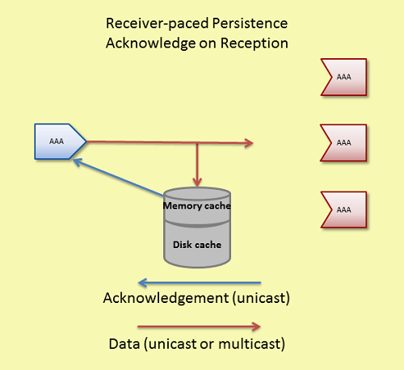

Sources, receivers, and Store instances interact in very controlled ways. This section illustrates the flow of network traffic between the components during three modes of operation and also provides a reference of persistence events.
This document is oriented mostly to programmers. See also the Operations Guide chapters Running Persistent Stores (umestored), Persistent Store Crashed, Persistent Sending Problems, and UM Persistent Store Log Messages.
- Note
- If your application is running with the LBM configuration option request_tcp_bind_request_port (context) set to zero, UIM port binding (also known as "request port binding") is turned off, which also disables persistence.
General Persistence Operation <-
Source Registration <-
UM sources heavily influence the persistence registration process. Sources send out registration information to enable receivers to register with Store instances and also monitor Store liveness. If Stores become unresponsive, or if communication among sources, Stores and receivers becomes impaired, the source directs re-registration.
The following outlines the major events in the source registration process with the Store instance:
- Source advertises topic over topic resolution transport
- (optional) Source queries for and resolves Store context names
- Source registers with Store by unicast
- Source sends SRI over configured transport
The following diagram illustrates network flow during the registration process.
Sources can find the correct Store instance(s) to register with from the values configured for it in the LBM configuration options ume_store (source) or ume_store_name (source). The LBM configuration option ume_store (source) contains the IP address, TCP port, registration ID, and group index for the Store(s) to be used by the source. The LBM configuration option ume_store_name (source) contains the names of the Stores to be used by the source. ume_store_name (source) requires that the Store context name is configured with the context-name option in the Store configuration file. See Identifying Persistent Stores and the UMP Element "<store>".
Sources unicast registrations to the Store instance. The Store unicasts responses back to the source. Registrations are on a per topic per source basis. Stores use RegIDs to identify sources and receivers. After registration sources may send data.
After the source successfully registers with all required Stores, the source delivers a Registration Complete event to the publisher and sends an SRI over the source's transport session. For multiple Stores in the QC group, the source determines the required number of Stores based on the LBM configuration option ume_retention_intragroup_stability_behavior (source).
The source sends the SRI at the rate set by the LBM configuration option ume_sri_inter_sri_interval (source) until it reaches the maximum number of SRIs set by ume_sri_max_number_of_sri_per_update (source). The Stores must receive this SRI.
- Note
- Persistence users are advised to follow the recommendations in Preventing Store Registration Hangs.
Source Registration Information (SRI) <-
An SRI is a control message sent over the UM transport by a source that contains Store information that a receiver needs to register with the Store instance(s).
An SRI contains the following Store information.
- Domain ID
- IP address
- TCP port
- Store index for all the Stores with which the source registered
- group index for all the Stores with which the source registered
- the source's Registration ID
- SRI overall version number and a separate version number for each Store
The SRI contains one overall version number and a separate version number for each Store instance. If Stores become unresponsive and the source must re-register when the Store returns, the source increases the SRI version number and the version numbers for the Stores it re-registered with. The highest SRI version number indicates the most current registration information. If a receiver gets an SRI with a higher version number than the version number it has, the receiver examines the individual Store version numbers and re-registers with the those Stores that have higher individual version numbers.
Receiver Registration <-
Receivers register with Store instance(s) after receiving a SRI packet from the source sending on the receiver's topic.
Receiver must receive an SRI before they can register with the Store instance(s). The following lists the major events in the receiver registration process.
- Receiver resolves topic over topic resolution transport.
- If source is not sending SRIs, receiver sends SRI request by unicast.
- Receiver receives SRI over its transport.
- Receiver registers with Store(s) by unicast.
The following diagram illustrates network flow during the registration process.
Receiver Registration Process <-
Any receivers who have resolved their topic and joined the transport session when the source sends out SRIs can register with the Store instance. Any receivers joining the transport session when the source is not sending SRIs can request an SRI from the source if they find that the persistence flag is set in the source's TIR during topic resolution. The source responds with a SRI record.
Receivers unicast registrations to the Store instance. The Store unicasts responses back to the receivers. Stores use RegIDs to identify sources and receivers. After registration, receivers may handle recovery and send acknowledgements.
Note: If a persistent receiver's initial registration fails, it does not become an Ultra Messaging receiver.
Persistence Normal Operation <-
The following diagram illustrates the normal operation of data reception and acknowledgement and also shows how UM attains Parallel Persistence. The source sends message data to receivers and Stores in parallel.
During normal persistence operation:
- Sources transmit data to receivers and Stores at the same time over UM multicast or unicast transport protocols.
- As the Store instance receives and persists messages, it unicasts acknowledgements (message stability control messages) to the source letting it know of successful reception and storage.
- As receivers process and consume messages they unicast acknowledgments to the Store letting the Store know of successful consumption of data.
- If the source desires delivery confirmation, the receiver unicasts acknowledgements directly to the source letting the source know of message consumption as well.
Normal operation and recovery can proceed at the same time. In addition, as a receiver consumes retransmitted messages, the receiver sends normal acknowledgements for consumption and confirmed delivery (if requested by the source).
Persistence Flight Size <-
UM supports a flight size mechanism that tracks messages in flight from a persistent source and responds when a send would exceed the configured flight size (LBM configuration options ume_flight_size (source) and/or ume_flight_size_bytes (source)). You can configure ume_flight_size_behavior (source) to either:
- block any sends that would exceed the flight size or,
- allow the sends while notifying your application.
UM considers a sent message in flight until the following two conditions are met:
- The source receives the configured number of stability acknowledgements from the Store instance(s).
- The source has received the configured number of delivery confirmation notifications. (See ume_retention_unique_confirmations (source).)
If configuring both ume_flight_size (source) and ume_flight_size_behavior (source), UM uses the smaller of the two flight sizes on a per send basis.
| ume_flight_size (source) | ume_flight_size_bytes (source) | Result |
|---|---|---|
| Exceeded | Exceeded | ume_flight_size_behavior (source) executes |
| Exceeded | Not Exceeded | ume_flight_size_behavior (source) executes |
| Not Exceeded | Exceeded | ume_flight_size_behavior (source) executes |
| Not Exceeded | Not Exceeded | No flight size sending restriction |
When using Stores in a Quorum/Consensus configuration, intragroup and intergroup stability settings affect whether UM considers a messages in flight. Consider a case with three Store instances in a single QC group, and two receivers. Given the default configuration, until a source receives a stability notification from two of the three Stores, UM considers a given message in-flight. In addition, if you set ume_retention_unique_confirmations (source) to 2, that same message would be considered in flight until the source receives two stability notifications AND two delivery confirmation notifications. See also Sources Using Quorum/Consensus Store Configuration.
Blocking Message Sends That Exceed the Flight Size
By default, when a source sends a message that exceeds it's flight size, the call to send blocks. For example, suppose the flight size is set to 1. The first send completes but before the source receives a stability notification or delivery confirmation, it initiates a second call to send. If the source uses a blocking send, the send call blocks until the first message stabilizes. If the source uses a non-blocking send, the send returns an LBM_EWOULD_BLOCK.
Notification of Message Sends That Exceed the Flight Size
Alternatively, ume_flight_size_behavior (source) can be set to notify your application when a message send surpasses the flight size. A send that exceeds the configured flight size succeeds and also triggers a flight size notification, indicating that the flight size has been surpassed. Once the number of in-flight messages falls below the configured flight size, another flight size notification source event is triggered, this time, informing the application that the number of in-flight messages is below the source's flight size.
Receiver Recovery <-
Normal loss retransmission over the UM transport operates identically in persistence as it does in streaming, according to the transport protocol. Stores do not participate in this transport-level loss retransmissions.
Persistent Stores become involved in message recovery in circumstances where the transport protocol is not able to recover. For example, if an application exits (either intentionally or by failure) and then restarts some time later, the transport is not able to recover messages that were sent during the application's down time. When the receiver restarts and re-registers, the receiver discovers the lowest message sequence number it did not receive, and subsequently requests retransmissions of all messages not received, starting from this low sequence number.
For more on this process see, Persistent Receiver Recovery.
Another circumstance in which the Store becomes involved in message recovery is if the transport protocol tries but is unable to recover lost messages. In this case, Off Transport Recovery (OTR) is used. Note that OTR is available in streaming, and is serviced by the source's retention buffer. But for persistent sources, the Store services OTR. See Off-Transport Recovery (OTR) for more information.
For more reliable persistence operation, Informatica recommends enabling OTR, especially when using DROs.
The following diagram illustrates receiver recovery:

Receivers unicast retransmission requests. If the Store has the message, it unicasts the retransmission to the receiver. If it does not have the message and is configured to forward the request to the source, it unicasts the retransmission request to the source. If the source has the message, it unicasts the retransmission directly to the receiver. See also Message Loss Recovery.
Store sends retransmissions from a thread separate from the main context thread so as not to impede live message data processing. The '<store>' configuration option, retransmission-request-processing-rate, sets the Store's capacity to process retransmission requests. The retransmission thread processes requests off a retransmission queue which is set at 4 times the size of retransmission-request-processing-rate. The following UM Web Monitor statistics indicate retransmission activity (see Store Web Monitor):
- Retransmission requests received rate
- Retransmission requests served rate
- Retransmission requests dropped rate
- Total retransmission requests dropped since Store startup
Registration Limitations <-
An important use case for UM Persistence is the idea that an application registers, either with a RegID or a SessionID, and can then exit (gracefully or not) and subsequently it can re-register with the same RegID or SessionID and pick up where it left off.
This re-registration has some limitations regarding operational parameters changing between the registration and the re-registration. In general, an application re-registering a source or receiver should use the same operational parameters that it used when it originally registered.
In particular, except as noted below, the re-registering application should use the same values for any "ume_..." configuration options supplied.
There are some exceptions to this rule:
- It is permissible for an application bind to a different IP address and/or Port. This is important because a failure might render the original host unusable, so the application must be allowed to migrate to a different host.
- It is permissible for the application to use a different transport type (TCP, LBT-RM, LBT-RM, IPC, etc). This is important because a migration to a different host might impose different networking restrictions (e.g. no multicast).
- The values for ume_store (source) can change (IP/Port/TRD). This is important because a Store might fail and need to be migrated to a different host.
RPP: Receiver-Paced Persistence <-
The Receiver-paced Persistence (RPP) mode of operation is primarily intended to prevent message loss to critical receivers, even if loss prevention requires blocking sources from sending. To achieve this, message retention in the Store is different from Source-paced persistence:
-
In Source-paced Persistence (SPP), messages are retained in the Store until the space is needed for new messages. I.e. the message repository is a circular buffer which will overwrite when it "wraps". If a slow or stopped receiver falls behind the source by more than the size of the Store's repository, that receiver will experience unrecoverable loss.
- In Receiver-paced Persistence (RPP), messages are retained only for as long as registered receivers need them to be retained in order to ensure recoverability of unacknowledged messages. When all necessary receivers have acknowledged a message, that message is removed from the Store's repository. If critical receivers are unable to acknowledge messages and the repository has reached its configured capacity, the source is blocked from sending additional messages. Blocking the source prevents sending of messages that would otherwise overwrite unacknowledged messages.
Source pacing is typically chosen for applications where outgoing messages are generated by external events or processes that cannot be slowed down or stopped (e.g. market data). Receiver pacing is typically chosen for applications which are able to slow down or even halt the generation of messages (e.g. a user interface which can inhibit user entry).
RPP is enabled with LBM configuration options. No special API calls are needed.
RPP differentiates between two types of receivers:
- Blocking: A blocking receiver will block the source if additional messages would overwrite retained messages not yet acknowledged by that receiver.
- Non-blocking: A non-blocking receiver will not block the source; the source will be allowed to overwrite retained messages not yet acknowledged by the non-blocking receiver. Thus a non-blocking receiver will experience unrecoverable message loss if it falls behind the source by more than the configured size of the Store's repository. (Note that this is the same behavior of source-paced persistence.)
Each receiver indicates its desired blocking behavior with the ume_receiver_paced_persistence (receiver) configuration option. Both blocking and non-blocking receivers may register with the same Store and subscribe to the same source.
Here are important points when using RPP:
-
The repository must be configured to allow RPP, and sources and receivers must be configured to request RPP behavior during registration. Assuming the Store is configured to allow RPP, the source determines the pacing behavior (receiver v.s. source) when it registers. If a receiver requests a different behavior, its registration will fail.
-
The Store tracks the number of registered blocking and non-blocking receivers for each message sent by the source. A message is normally retained in the Store repository until that number of receivers have acknowledged consumption. Once all receivers acknowledge consumption of a message, that message is removed from the repository.
-
Sources can modify specific repository configuration options that pertain to RPP.
-
Due to RPP's message retention policies, late joining RPP receivers cannot recover previously sent messages.
-
With RPP, sources are required to configure their flight size in bytes, in addition to message count. (With SPP, only message count flight size is required.) The value set for the source's ume_flight_size_bytes (source) configuration option is checked against a maximum allowed value specified in the Store's XML configuration file.
- With RPP, if the Store's repository is full with unacknowledged messages by blocking receivers, the Store will block the source by withholding stability acknowledgements, resulting in flight size blockage. See Persistence Flight Size. (With SPP, once the repository is full, it will simply start overwriting the oldest messages with new messages from the source.)
In addition, a disk write delay interval for the repository, improves performance by preventing unnecessary disk activity. If all receivers acknowledge within the write delay interval, the message is deleted from memory without having ever been written to disk. This gives an RPP Store comparable performance to a memory-only Store, while still giving a large disk-based repository if it is needed. (But notice that if slow or absent receivers cause the write delay to expire without the needed acknowledgements, the Store performance will return to the general performance of an SPP Store. You can tell if the Store has resorted to writing to disk by looking at the file size of the cache file. If it is greater than zero, it represents a high water mark of data written to disk since the file was last deleted.
Informatica recommends provisioning Stores based on SPP Store performance.
RPP introduces the capability of a source application to override set the settings for the following operational options on the Store:
- repository-size-threshold
- repository-size-limit
- repository-disk-file-size-limit
- repository-disk-write-delay
- repository-allow-ack-on-reception (The source doesn't actually override this option. This option enables the source to set the Store's ACK behavior.)
With SPP, those parameters are set only by the Store configuration file alone. With RPP, the source's configuration can optionally request a different value for those operating parameters, with the Store's configured value being used as a maximum allowed threshold.
RPP Registration <-
A source configures its desired pacing behavior (source paced v.s. receiver paced) with ume_receiver_paced_persistence (source) and ume_receiver_paced_persistence (receiver). If set to 1, it becomes an RPP source. Assuming the Store is configured to allow RPP, when an RPP source registers with the Store, the Store's repository for that source becomes an RPP repository. The receiver configures its desired pacing behavior with ume_receiver_paced_persistence (receiver), where 0 is source-paced and 1 or 2 are receiver-paced. The receiver's pacing must match that of the source and Store, otherwise the receiver's registration will fail. In addition, the choice of 1 or 2 determines the receiver's desired blocking behavior (1=blocking, 2=non-blocking).
Note that although the configured pacing behavior must match between source and receiver, that does not mean that the numerical setting of the ume_receiver_paced_persistence (source) and ume_receiver_paced_persistence (receiver) options must be equal. If the source is 0 (source paced), then the receiver must also be 0. However, if the source is 1 (receiver paced), then the receiver must be either 1 or 2, depending on the receiver's desired blocking behavior.
As with Source-paced Persistence, RPP sources send Source Registration Information (SRI) packets to RPP receivers over the configured UM transport. RPP Receivers must wait for this information before they can initiate registration requests to the Store. See Source Registration and Receiver Registration for more information.
A source registration request includes the following:
- Designation of an RPP topic
- Reconfigured repository configuration option values. Possible options are the 3 repository size options: repository-allow-ack-on-reception, repository-disk-write-delay, and source-flight-size-bytes-maximum.
- Re-registration must request the same configuration options as were initially requested, or the Store will reject the request.
A receiver registration request includes its designation as a RPP receiver.
The repository's registration response to both a source and a receiver acknowledges RPP mode.
Late Registering Receiver
A late joining receiver that registers after the first RPP topic message has been sent cannot recover any messages sent prior to its initial registration. It is the user's responsibility to synchronize a receiver's initial registration with the start of message transmission. This restriction does not apply to an RPP receiver that initially registered at an earlier time and is now re-registering, as after a failure and restart. In that case, messages that were sent after the receiver's initial registration will be retained by the Store for recovery by the receiver.
Early Exiting Receiver
Each registered receiver has associated with it an activity timeout and a state lifetime. During normal operation, the Store monitors the operation of a registered receiver. If the Store hears nothing from a receiver for the duration of the activity timeout, the Store assumes that the receiver has halted operation. Messages will be retained by the Store according to the receiver's configured blocking behavior. This gives the receiver time to restart and re-register. If an inactive receiver re-registers before the state lifetime expires, the receiver will be able to recover all messages that it missed.
However, if a receiver remains halted for the duration of the state lifetime, the Store will delete the receiver state information. If the repository is retaining messages for this receiver, those messages will be implicitly acknowledged on behalf of the expired receiver, making them eligible for deletion if no other receivers' acknowledgements are pending. If the source is blocked waiting for this receiver, the Store will unblock the source. Finally, if the halted receiver re-register after its state lifetime has expired, the Store will treat it as an initial registration, and the messages it missed will not be available.
UM Version RPP Compatibility Matrix
The following table indicates the result of registration requests across UM versions:
| Version/Object | Pre-ver. 5.3 Store | Ver. 5.3 RPP Store | Ver. 5.3 Non-RPP Store |
|---|---|---|---|
| Pre 5.3 Source | Granted | Rejected * | Granted * |
| 5.3 RPP Source | Granted - Source Error | Granted * | Rejected * |
| 5.3 Non-RPP Source | Granted | Rejected * | Granted * |
| Pre 5.3 Receiver | Granted | Rejected | Granted |
| 5.3 RPP Receiver | Granted - Receiver Error | Granted | Rejected |
| 5.3 Non-RPP Receiver | Granted | Rejected | Granted |
Where:
- Granted - Source Error indicates that the Store granted the registration but the source detected that RPP behavior was not acknowledged by the Store.
- Granted - Receiver Error indicates that the Store granted the registration but the receiver detected that RPP behavior was not acknowledged by the Store.
- * Refers only to the re-registration of a source with an existing source repository because the source determines the repository's behavior for new registrations.
RPP Normal Operation <-
At a high level, the normal sequence of operations for RPP is the same as it is for SPP:
-
Sources transmit messages to receivers and Stores at the same time over UM transports. Sources also track stability acknowledgements from the Store. A source is allowed to send messages ahead of stability acknowledgements up to the configured flight size. If the flight size of unstabilized messages is reached, the source is blocked from sending more messages pending stability acknowledgements from the Store.
-
Receivers acknowledge consumption of received messages back to Stores, and optionally to the sources.
- Stores retain messages as appropriate, send stability acknowledgements to the sources for messages, and tracks receiver consumption acknowledgements.
One important way that RPP differs from SPP is in the sending of stability acknowledgements. With SPP, the Store normally waits to send a stability acknowledgement until a message is "stable" on the configured storage medium, either disk or memory. With RPP, the sending of stability acknowledgements is affected by receiver consumption acknowledgements in two ways:
-
If a message is acknowledged by all registered receivers before the message is written to disk, then there is no need to retain the message at all. The message is deleted and a stability acknowledgement is sent to the source.
- If the repository reaches its capacity limit and there are blocking receivers which have not acknowledged the messages, the Store stops sending stability acknowledgements. It is the lack of stability acknowledgements, combined with the configured flight size, which causes the source to block. (To be precise, the Store stops sending stability when there is exactly one flight size worth of room available in the repository.)
The following also affect stability acknowledgements:
-
Acknowledge on Reception - If the source is configured for ume_repository_ack_on_reception (source) and the Store is configured for repository-allow-ack-on-reception, the Store sends a stability acknowledgement to the source immediately upon reception of a message, even before any receiver acknowledgements are received, and before the message is written to disk. This setting can increase system throughput for some use cases, but also increases the risk of message loss in the event of a Store failure.
 - Write Delay - The repository option repository-disk-write-delay allows the repository to hold messages in memory cache longer before persisting them to disk. This delay increases the probability that all RPP receivers acknowledge message consumption, eliminating the need to persist the message to disk.
For memory Store repositories, the options ume_repository_ack_on_reception (source) and repository-disk-write-delay have no effect.
RPP Message Recovery <-
The normal way that RPP receivers recover messages is when they re-register within the state lifetime after a failure. However, just as with SPP, there is the possibility that the transport session of the source is unable to successfully deliver all messages to the receiver. In the event of unrecoverable loss at the transport session, the Off Transport Recovery (OTR) method is also available for RPP receivers. OTR does not require the receiver to restart to recover messages from the Store. See the Off-Transport Recovery (OTR) for more information.
RPP Deregistration <-
You can deregister either sources or receivers using deregistration APIs, (lbm_src_ume_deregister(), lbm_rcv_ume_deregister(), and lbm_wrcv_ume_deregister()). UM deletes the state of deregistered objects.
If you deregister an RPP receiver, UM automatically decrements the number of receiver acknowledgements required to maintain RPP behavior. The Store issues Deregistration Successful events for every source or receiver that deregisters. Note that after deregistering a source or receiver, the object will still exist, but is no longer participating in persistence. An attempt to send to a deregistered source will return an error. A deregistered receiver will continue to deliver messages on the topic, but since it is no longer participating in persistence, it will be unable to acknowledge those messages. If the application wants to re-join persistence, it must delete the source or receiver and re-create it, allowing it to re-register. See Persistence Events.
Users should be cautious using the deregistration APIs, especially for sources. Source deregistration will immediately delete from the Store any messages from that source which might be retained due to lack of receiver acknowledgement. This deletion will render the receivers unable to recover those messages.
Implementing RPP <-
Follow the procedure below to configure Receiver-paced Persistence:
-
Set ume_receiver_paced_persistence (source) and ume_receiver_paced_persistence (receiver) in the LBM configurations. If only certain sources or receivers in a context are RPP, use lbm_*setopt() in the source or receiver application or use UM XML configuration files.
-
Set repository-allow-receiver-paced-persistence = 1 for the repository in the Store configuration file.
-
Coordinate ume_flight_size_bytes (source) between the repository and the source. Set the maximum allowable flight size with the repository option, source-flight-size-bytes-maximum. Sources can reconfigure its flight size bytes to a value less than or equal to the maximum.
-
Optional: coordinate the ume_repository_ack_on_reception (source) between the repository and the source. If the repository has repository-allow-ack-on-reception enabled (1), the source can choose to keep it enabled or turn it off. If the repository has repository-allow-ack-on-reception disabled (0), the source cannot turn it on.
-
Optional: if the repository is a disk repository (repository-type "disk"), set the maximum write delay with the repository option, repository-disk-write-delay. Sources can set ume_write_delay (source) to a value less than or equal to repository-disk-write-delay.
-
Optional: coordinate repository size options between the source and repository. If you wish to use the repository's values, you do not need to configure source configuration values. The repository sets a maximum for these three options. The source can reconfigure the repository's options with values less than or equal to the maximum configured for the repository using the following LBM configuration options:
Example RPP Configuration Files <-
The sample configuration files shown below show how a Store configuration file establishes certain RPP option values and the source can reconfigure them via an LBM configuration file. Although only two files appear below, this configuration represents two, single-Store quorum/consensus groups and one UM context. A second Store configuration file would be required for the Store "store1rpp" containing options and values identical to "store0rpp".
LBM Configuration File for RPP
The following example LBM configuration file will work for applications which have sources and/or receivers that must be persisted using RPP. This configuration file is written assuming that the Store is configured as shown in the next section.
-
The source configures ume_flight_size_bytes (source) to 1,000,000 bytes. For this to work, the repository must set source-flight-size-bytes-maximum to a value greater than or equal to 1,000,000.
-
The source uses ume_write_delay (source) to override the repository's repository-disk-write-delay setting to 1000 ms (1 second). Note that for this to work, the repository must set repository-disk-write-delay to a value greater than or equal to 1000 ms.
- To remove clutter from the example, the transport type is allowed to default to TCP. Many persistence users prefer LBT-RM to more quickly and efficiently distribute messages to Stores and receivers.
##Sample LBM Configuration File # Default to TCP transport # Multicast Resolver Network Options context resolver_multicast_address 225.8.17.29 context resolver_multicast_interface 10.29.3.0/24 ## Persistence Options ### source ume_store_name store0rpp source ume_store_name store1rpp source ume_store_name store2rpp source ume_session_id 535353 source ume_store_behavior qc source ume_flight_size 500 # RPP-oriented configs. # If this app creates receivers, have them request RPP mode. receiver ume_receiver_paced_persistence 1 # If this app creates sources, have them request RPP mode. source ume_receiver_paced_persistence 1 source ume_flight_size_bytes 1000000 # The following parameters override Store configurations. source ume_repository_size_threshold 104857600 source ume_repository_size_limit 209715200 source ume_repository_disk_file_size_limit 1073741824 source ume_repository_ack_on_reception 1 source ume_write_delay 1000
Store Configuration File
In the following example Store configuration file, RPP options appear in the section for the topic pattern, ABC*. This configuration file is written assuming client applications (sources and receivers) use LBM configuration files similar to that shown in the preceding section.
There are actually three Stores configured in QC. The other two's configurations should differ appropriately. For example, change each instance of "store0" to "store1" and "store2" respectively.
RPP Cross Feature Functionality <-
| UM Feature | Supported | Notes |
|---|---|---|
| Store Proxy Sources | Yes | |
| DRO | Yes | |
| UM Transports | Yes | |
| Multi-Transport Threads | No | The Multi-Transport Threads does not support persistence. |
| Off-Transport Recovery | Yes | |
| Late Join | No | A receiver cannot recover messages sent prior to that receiver's initial registration. |
| HF | Yes | |
| HFX | Yes | |
| Wildcard Receivers | Yes | |
| Message Batching | Yes | |
| Ordered Delivery | Yes | |
| Request/Response | Yes | |
| Multicast Immediate Messaging (MIM) | No | MIM messages are not persisted and have no impact on RPP. |
| Source Side Filtering | Yes | |
| Self-Describing Messaging (SDM) | Yes | |
| Pre-Defined Messaging (PDM) | Yes | |
| UM Spectrum | Yes | |
| Monitoring/Statistics | Yes | |
| Acceleration - DBL | Yes | |
| Acceleration - UD | Yes | |
| Implicit/Explicit Acknowledgements | Yes | |
| Registration ID/Session Management | Yes | |
| Fault Tolerance - Quorum Consensus | Yes | |
| UM SNMP Agent | Yes | |
| Ultra Messaging Manager | Yes | |
| Ultra Messaging Cache | Yes | |
| Ultra Messaging Desktop Services | No |
Persistence Events <-
The Ultra Messaging API provides a number of events, callbacks, messages, functions, and settings. The API reference (C API, Java API or .NET API) can be used to see the true extent of the API. In order to design successful applications, though, a high level understanding of the events and callbacks is essential.
- Events - Source events occur on a per source basis.
- Callbacks - Source and receiver application callbacks called directly from UM internal operation and usually demands a return value be filled in and/or are informational in nature. Typically, applications do very little processing in callbacks.
- Messages - Messages to receivers can simply contain UM information or have impact on operation.
Some specific languages, such as C, Java, or C# may have specific nuances for the various events and callbacks. But, by and large, an application should plan on having access to the items listed in the following sections. For details for a particular language, consult the Ultra Messaging API documentation (C API, Java API or .NET API).
Persistence Source Events <-
The following events and callbacks are available for source applications:
| Event Name | Type | Description |
|---|---|---|
| Store Registration Success | Source Event | Delivered once a source has successfully registered with a single Store. Event contains flags to show if the source is "old" (i.e. a re-registration) as well as the sequence number that the source should use as its initial sequence number when sending, and the Store information. See LBM_SRC_EVENT_UME_REGISTRATION_SUCCESS_EX. |
| Store Registration Complete | Source Event | Delivered once a source has completed registration with the required Store(s). This indicates the source may send as it desires. Event contains the consensus sequence number. See LBM_SRC_EVENT_UME_REGISTRATION_COMPLETE_EX. |
| Store Registration Error | Source Event | Delivered once a source has received an error from the Store indicating the requested registration was not granted. Event contains an error message to indicate what happened. See LBM_SRC_EVENT_UME_REGISTRATION_ERROR. |
| Store Message Stable | Source Event | Delivered once a message is stable at a single Store. Event contains the message sequence number and indicates if the message meets Intergroup and/or Intragroup stability requirements. Also includes the Store information. See LBM_SRC_EVENT_UME_MESSAGE_STABLE_EX. |
| Store Message Not Stable | Source Event | Delivered once a message's ume_message_stability_lifetime (source) has expired. The source no longer retransmits the message to the Store. See LBM_SRC_EVENT_UME_MESSAGE_NOT_STABLE. |
| Delivery Confirmation | Source Event | Delivered once a message has been confirmed as delivered and processed by a receiving application. Event contains the message sequence number as well as indications whether the message has met the unique confirmations requirement. Also contains the receiver's Registration ID or Session ID. See LBM_SRC_EVENT_UME_DELIVERY_CONFIRMATION_EX. |
| Store Unresponsive | Source Event | Delivered once a Store is seen to be unresponsive due to failure or network disconnect. Event contains a message with more details suitable for logging. If a majority of a source's configured Stores are unresponsive, the application will not be allowed to send messages. See LBM_SRC_EVENT_UME_STORE_UNRESPONSIVE. |
| Store Message Reclaimed | Source Event | Delivered once a message has passed through retention and is about to be released from memory or disk. Event contains the message sequence number. (Reclaim refers to storage space reclamation.) See LBM_SRC_EVENT_UME_MESSAGE_RECLAIMED_EX. |
| Store Forced Reclaim | Callback | Indicates a message is being forcibly released because the memory size limit (retransmit_retention_size_limit (source)) has been exceeded or the message's ume_message_stability_lifetime (source) has expired. Event contains the message sequence number. See ume_force_reclaim_function (source). |
| Flight Size Notification | Source Event | Indicates that the number of in-flight messages for a source has exceeded or fallen below the configured flight size limit for a source. The event indicates if the flight size has been exceeded (OVER) by a new message send or that a message recently stabilized has reduced the number of in flight messages to less than the flight size limit (UNDER). See LBM_SRC_EVENT_FLIGHT_SIZE_NOTIFICATION. |
| Source Deregistration Success | Source Event | Delivered once a source successfully deregisters from an individual Store. The event contains either the RegID or Session ID, the sequence number of the last message stored for the source and Store information. See LBM_SRC_EVENT_UME_DEREGISTRATION_SUCCESS_EX. |
| Source Deregistration Complete | Source Event | Delivered once UM receives a successful deregistration event from all Stores. See LBM_SRC_EVENT_UME_DEREGISTRATION_COMPLETE_EX. |
Persistence Receiver Events <-
The following callbacks and messages are available for receiver applications:
| Event Name | Type | Description |
|---|---|---|
| Store Registration Success | Message | Delivered once a receiver has successfully registered with a single Store. Message contains flags to show if the receiver is "old" (i.e. Not a new registration) as well as the sequence number that the receiver should use as its low sequence number, and the Store information. In addition, the event contains the source's Registration ID or Session ID and the receiver's Registration ID or Session ID. See LBM_MSG_UME_REGISTRATION_SUCCESS_EX. |
| Store Registration Complete | Message | Delivered once a receiver has completed registration with the Store(s) required. This indicates the receiver may now receive data. Message contains the consensus sequence number. See LBM_MSG_UME_REGISTRATION_COMPLETE_EX. |
| Store Registration Failure | Message | Delivered once a receiver has received an error from the Store indicating the requested registration was not granted. Event contains an error message to indicate what happened. See LBM_MSG_UME_REGISTRATION_ERROR. |
| Receiver Deregistration Success | Message | Delivered once a receiver successfully deregisters from an individual Store. The message contains either the RegID or Session ID for the receiver and the source, the sequence number of the last message stored for the source and Store information. See LBM_MSG_UME_DEREGISTRATION_SUCCESS_EX. |
| Receiver Deregistration Complete | Message | Delivered once UM receives a successful deregistration event from all Stores. See LBM_MSG_UME_DEREGISTRATION_COMPLETE_EX. |
| Store Registration Change | Message | Delivered once a change in Store information is received from the source. The extent of the change is included in a message suitable for logging. See LBM_MSG_UME_REGISTRATION_CHANGE. |
| Store Retransmission | Message | Retransmissions from recovery come in as normal messages with a flag indicating their status as a retransmission. See LBM_MSG_FLAG_UME_RETRANSMIT and LBM_MSG_FLAG_OTR. |
| Store Registration Function | Callback | Called once a receiver receives Store information from a source and UM desires to know the RegID to use for the receiver. Callback passes the source RegID, the Store information, and the source transport name. The return value is the RegID that UM should request to use from the Store. See ume_registration_extended_function (receiver). |
| Store Recovery Sequence Number Function | Callback | Called once registration is about to complete and the low sequence number must be determined. Callback passes the highest sequence number seen from the source and the consensus sequence number from the Stores. See ume_recovery_sequence_number_info_function (receiver). |
Store Monitoring <-
See Monitoring for an overview of monitoring an Ultra Messaging network.
It is important to the health and stability of a UM network to monitor the operation of Stores. This monitoring should include real-time automated detection of problems that will produce a timely alert to operations staff.
Three types of data should be monitored:
- Log file.
- UM library statistics (context, source, receiver, wildcard receiver, event queue).
- Daemon statistics (similar data to the Store Web Monitor).
For UM library stats and daemon stats, the monitoring messages contain an "application ID". For UM applications, this is a user-specified name intended to identify the individual component/instance, and is supplied by the option monitor_appid (context).
However, in the Store, the "monitor-appid" is typically set in the store's XML configuration file, so that it can be set on a store-basis. I.e. if the Store daemon is configured with multiple Store instances, each one can be given its own "monitor-appid".
For example, a Store configured with:
The UM library stats will have the application ID "store_appid_topic1".
However, in the case of Store daemon stats, the "name" attribute of the UMP Element "<store>" is used as the application ID. So in the above example Store configuration, the daemon stats will have the application ID "store_topic1".
Store Monitoring: Logs <-
Ideally, log file monitoring would support the following:
- Archive all log messages for all Stores for at least a week, preferably a month.
- Provide rapid access to operations staff to view the latest log messages from a Store.
- Periodic scans of the log file to detect errors and raise alerts to operations staff.
Regarding log file scanning, messages in the Store's log file contain a severity indicator in square brackets. For example:
Sun Oct 30 08:32:22 2022 [WARNING]: Store-5688-5445: WARNING: store "store_topic1" cache directory appears to be on an NFS mount. This is not recommended.
Informatica recommends alerting operations staff for messages of severity [WARNING], [ERROR], [CRITICAL], [ALERT], and [EMERGENCY].
It would also be useful to have a set of exceptions for specific messages you wish to ignore. For example, if you have a Store that must locate its state and cache files on an NFS mount, you might want to have your scanner exclude message Store-5688-5445.
There are many third party real-time log file analysis tools available. A discussion of possible tools is beyond the scope of UM documentation.
Store Monitoring: UM Library Stats <-
The Store communicates with persistent applications using Ultra Messaging protocols, and therefore makes use of the UM library. It is just as important to monitor the UM library statistics for the Store as it is for applications. Automatic monitoring is enabled using the same configuration options as for applications.
There are two data formats for UM library stats:
- Protobufs - recommended.
- CSV - deprecated. Informatica recommends migrating to protobufs.
For example, here is an excerpt from a sample Store configuration file that shows how an XML-based UM library configuration file is specified:
Here is an excerpt from a sample "um.xml":
Notes:
-
The monitor_format (context) value "pb" selects the protobuf format and is available for the Store in UM version 6.14 and beyond. Selecting this format implicitly enables the inclusion of the Store's daemon stats (see below).
-
For a list of possible protobuf messages for the Store, see the "ump_mon.proto" file at Example ump_mon.proto.
-
The Store context named "store_topic1" is configured with the
"automonitor"template, which sets the automatic monitoring options. The monitor_interval (context) option enables automatic monitoring and defines the statistics sampling period. In the above example, 600 seconds (10 minutes) is chosen somewhat arbitrarily. Shorter times produce more data, but not much additional benefit. However, UM networks with many thousands of applications may need a longer interval (perhaps 30 or 60 minutes) to maintain a reasonable load on the network and monitoring data storage. -
When automatic monitoring is enabled, it creates a context named "29west_statistics_context". It is configured with the "mon_ctx" template, which sets options for the monitoring data TRD. (Alternatively, you can configure the monitoring context using monitor_transport_opts (context).) When possible, Informatica recommends directing monitoring data to an administrative network, separate from the application data network. This prevents monitoring data from interfering with application data latency or throughput. In this example, the monitoring context is configured to use an interface matching
10.29.3.0/24. -
In this example, the monitoring data TRD uses Unicast UDP Topic Resolution. The lbmrd daemon is running on host 10.29.3.101, port 12001.
-
The monitoring data is sent out via UM using the TCP transport.
-
These settings were chosen to conform to the recommendations in Automatic Monitoring.
For a full demonstration of monitoring, see: https://github.com/UltraMessaging/mcs_demo
Store Monitoring: Daemon Stats <-
The daemon statistics for the Store represent a superset of the information presented on the Store Web Monitor.
There are two data formats for the Store to send its daemon stats:
- Protobufs - recommended. The protobufs format is accepted by the Monitoring Collector Service (MCS) and the "lbmmon" example applications: Example lbmmon.c and Example lbmmon.java.
- Binary - deprecated. Informatica recommends migrating to protobufs. For information on the deprecated binary formatted daemon stats, see Store Binary Daemon Statistics.
The recommended way to enable Store daemon stats is by enabling UM library stats using using monitor_format (context) with format "pb". For example, here's an excerpt from a UM library XML configuration file from https://github.com/UltraMessaging/mcs_demo file um.xml:
<template name="automonitor">
<!-- Additional application configuration to enable automatic monitoring. -->
<options type="context">
<option name="monitor_format" default-value="pb"/>
<option name="monitor_interval" default-value="600"/>
<option name="monitor_transport" default-value="lbm"/>
</options>
</template>
...
<application name="store1">
<contexts>
<context name="store_topic1" template="mytemplate,automonitor,res_trd1">
<sources/>
</context>
<!-- Context created by automatic monitoring. -->
<context name="29west_statistics_context" template="mon_ctx">
<sources/>
</context>
</contexts>
</application>
The protobufs format is accepted by the Monitoring Collector Service (MCS) and the "lbmmon" example applications: Example lbmmon.c and Example lbmmon.java.
For a list of possible protobuf messages for the Store, see the "ump_mon.proto" file at Example ump_mon.proto.
For a full demonstration of monitoring, including Store daemon stats, see: https://github.com/UltraMessaging/mcs_demo
See also Store Monitoring: UM Library Stats.